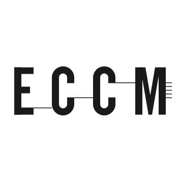
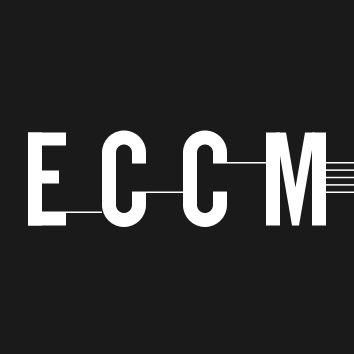
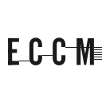
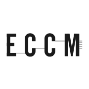
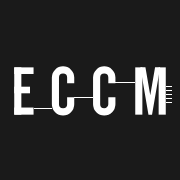
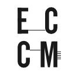
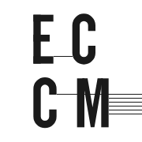
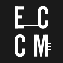
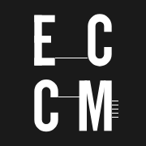

Logo
Square mark
The square mark, no tagline, for icons and avatars, positive and negative; the outlined, plain and bold variants are files under icons/.


Wordmark
Instrument Sans medium at width 75, lowercase, two lines a language, starting on the E, both languages at one size: under the mark at 40 units, one language or both, and beside the mark at 37 units after 28 units of air, one language or both side by side; each lockup plain, in a bordered frame and white on black, at 11rem of mark width.
Icons
The icon sizes: 16, 32, 48, 64, 128, 180, 192, 256 and 512 (the 256 not shown here), and a favicon.ico holding 16, 32 and 48. From 128 up each size is its own drawing with the hairlines snapped to whole pixels on an integer pitch, which is what keeps five stave lines one shade; at 48 and 64 the hairlines are dropped and the M is 12 units wider with its arms a stem wide, so its counters open; at 16 and 32 the letters are the bold set, stems of 20 units, the way eccm.ee's own favicon fills its square. At 16 a stem is 0.6 px and the letters are still four blobs; a true 16 px mark with whole-pixel strokes is a decision not taken here.






